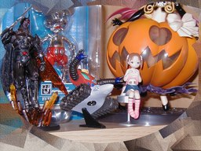
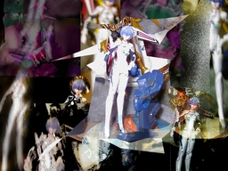

付録フィギュア 綾波レイ ＆ 松岡 美羽


角川書店のエヴァンゲリオン単行本９巻 限定版 付録の綾波レイと、月刊電撃大王の付録です。発売時期は忘れてしまいました。 ちなみに綾波レイの複数のフィギュアを買ってみたのですが、この人形ほどのものにはまだ出会えていません。ちなみに同じ原型師によるアスカも雑紙購読者限定で売っていたようです。私は持っておりません。 電撃大王は少なくともこの前頃から買っていて、今も毎号買っています。実は電撃大王の前身である何冊かの雑誌(名前は失念！)から何年か買っていたのですが、入院のほとんど前く(ぐ？)らいから買わなくなってしまいました。何で再び買いはじめたのだろう。気になるアニメでもあったのか……立ち読みしたマンガでもあったのか…？ 今回は GIMP のみを使ってトライしてみました。背景や脇役は、ちょっと説明し辛いので、その他大勢ということにしておきます。 初公開：2007年02月20日 18:14:57 最新版：2007年02月20日 18:14:57
Trackbacks: 《あなたは、稼げるわ だって私がついてるもの・・・》 from 幸せになる!!!!! あなたは、稼げるわ だって私がついてるもの・・・ 受信： 2007-02-26 00:31:17 (JST) 《綾波レイの画像です》 from 綾波レイ画像庫 レイの画像をアップしましたのでぜひ見に来てくださいね♪ 受信： 2007-05-16 12:19:13 (JST) 《Percocet 93-490 10 mg.》 from Percocet. Buy percocet online. Half life of percocet. Percocet. Identify a percocet 93-490. How to extract acetaminophen from percocet. 受信： 2007-06-01 05:47:49 (JST) 《エヴァンゲリオンの綾波レイの画像集その３》 from エヴァンゲリオン無料情報センター＠エヴァンゲリオン大好き 綾波レイの画像紹介その３やっと3回目の綾波レイの画像紹介です。今回はバラエティは豊富だけど、好みが別れるかなぁ。僕は何でもOKな人間なんで、雑食ですね、ほんと。そんなこんなで【takepon3】presents綾波レイ画像紹介その３ どうぞ着ぐるみ...... 受信： 2007-09-08 02:58:48 (JST) 《漢字の「馬」の象形文字はむしろ「棒馬(hobby horse)」では？》 from JRF の私見：雑記 漢字のもと、金文などに見られる「馬」の象形文字はとても「目」が大きい。書き方でわかりにくいが、よく見ると確かに今の「馬」にも「目」は含まれている。これがあの生きている馬を上か横から図示したものとはとても思えない。むしろ私にはおもちゃの馬すなわち「棒馬(hobby horse)」に見える。... 受信： 2012-09-23 04:55:35 (JST) Comments: 間違いはいろいろある。灰をまけば良いというなら、一度検索することをオススメする。 投稿: JRF | 2007-02-20 20:54:26 (JST) 上の時間が狂っているのはココログの登稿に時間がかかり、登稿した時間と再構築の時間がズレているからです。 投稿: JRF | 2007-02-20 20:56:45 (JST) 妖精なんているわけないじゃん(onpu) 投稿: JRF | 2007-02-20 21:01:06 (JST) 自慰さんなんていえるか！恥ずかしい!!! 投稿: JRF | 2007-02-20 21:03:05 (JST) あとから考えると上のコメントは精神的にキていたがゆえのものです。恥ずかしい限りです。 投稿: JRF | 2007-05-31 22:56:19 (JST) Links: 角川書店: http://www.kadokawa.co.jp/ 電撃大王: http://www.mediaworks.co.jp/magazine/enter/dai.php GIMP: http://www.gimp.org/
後方参照 (1 件)
- URL参照 漢字の「馬」の象形文字はむしろ「棒馬(hobby horse)」では？ 2012年09月17日 18:51:27